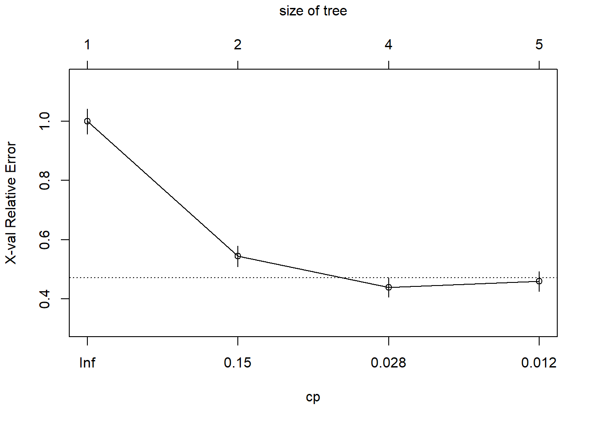
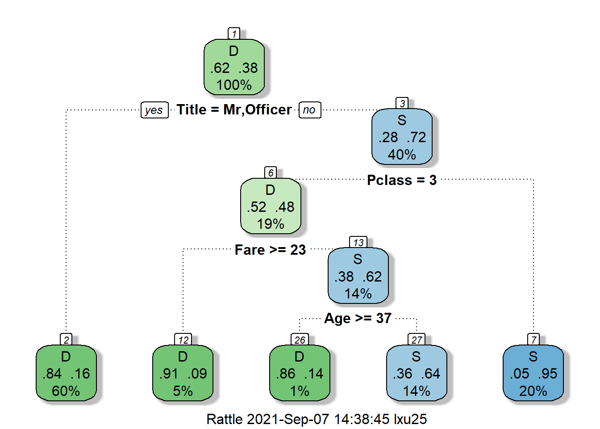
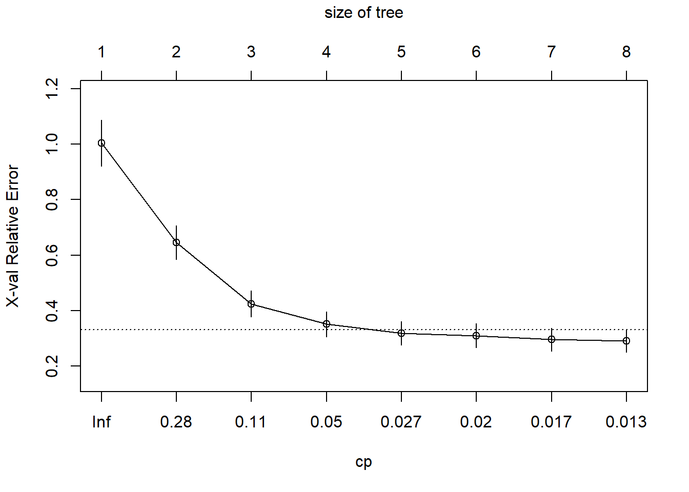
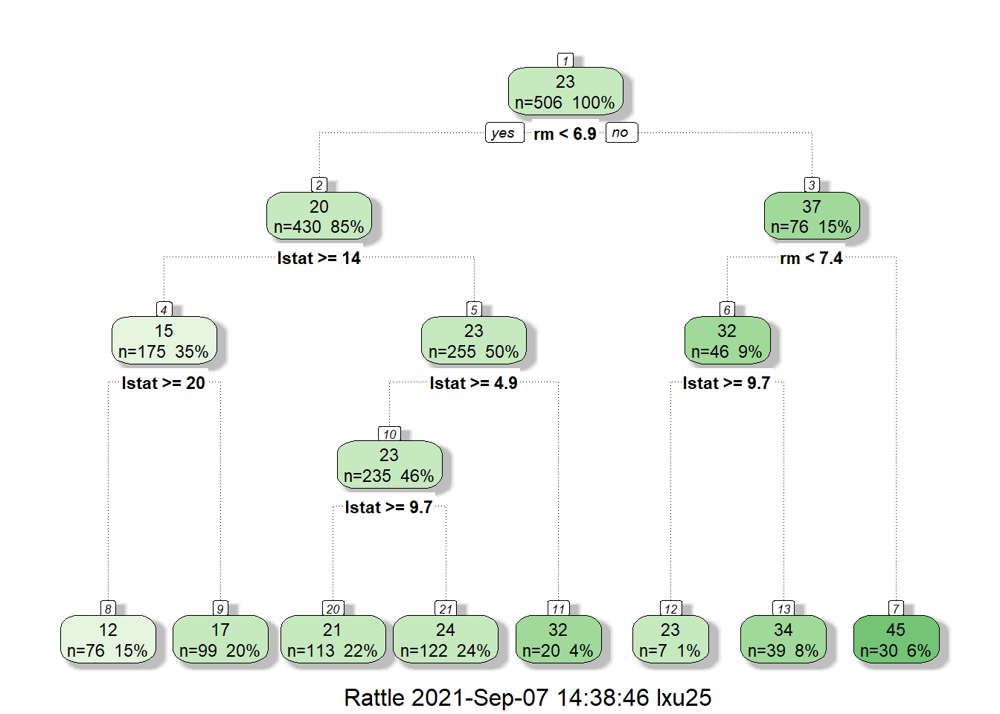

Chapter 24 Decision Tree
A decision tree is a flowchart-like structure in which each internal node represents a “test” on an attribute (e.g. whether a coin flip comes up heads or tails), each branch represents the outcome of the test, and each leaf node represents a class label (decision taken after computing all attributes). The paths from root to leaf represent classification rules.
Below it is an example of a decision tree for loan application. An applicant is evaluated at each node and branched into different branched based on the given rules. The end-node will then decide whether the application will be approved. For example, the first node (i.e., the first decision criteria) is whether the applicant is aged above or below 40. The applicant will be channeled to different branch based on this criteria.
Figure 24.1: Decision tree for loan application
In the prediction context, such decision tree can be used to predict, e.g., whether the applicant will default. The decision tree is very simple to understand and easy to interpret. The trees can be also visualized and provide insight on how the prediction model work.
You may be wondering, how can we know what should be right decision rules, i.e., the structure of the decision tree? In fact, the optional decision tree is known to be computational impossible. Consequently, practical decision-tree learning algorithms are based on heuristic algorithms such as the greedy algorithm where locally optimal decisions are made at each node.
When we are predicting a binary outcome, e.g., whether applicant will default, this is called classification problem. The corresponding tree is called decision tree. When we are predicting continous outcome, e.g., house price, that is called regression tree.
In R, we can also construct decision tree using the rpart package. Let’s first take a look at this famous problem of predicting who will survive from the Titanic. Refer to kaggle for more detailed information about this competition of predicting survival of Titanic passengers.
# load the training and test dataset
train <- fread('data/titanic/train.csv')
test <- fread("data/titanic/test.csv")
full=rbind(train, test, fill=TRUE)
head(full)## PassengerId Survived Pclass
## 1: 1 0 3
## 2: 2 1 1
## 3: 3 1 3
## 4: 4 1 1
## 5: 5 0 3
## 6: 6 0 3
## Name Sex Age SibSp Parch
## 1: Braund, Mr. Owen Harris male 22 1 0
## 2: Cumings, Mrs. John Bradley (Florence Briggs Thayer) female 38 1 0
## 3: Heikkinen, Miss. Laina female 26 0 0
## 4: Futrelle, Mrs. Jacques Heath (Lily May Peel) female 35 1 0
## 5: Allen, Mr. William Henry male 35 0 0
## 6: Moran, Mr. James male NA 0 0
## Ticket Fare Cabin Embarked
## 1: A/5 21171 7.2500 S
## 2: PC 17599 71.2833 C85 C
## 3: STON/O2. 3101282 7.9250 S
## 4: 113803 53.1000 C123 S
## 5: 373450 8.0500 S
## 6: 330877 8.4583 Q##
## C Q S
## 2 270 123 914full[Embarked=="", Embarked:="S"] # replace missing Embarked with the most frequent value
## examine the cabin information
table(full$Cabin)##
## A10 A11 A14 A16
## 1014 1 1 1 1
## A18 A19 A20 A21 A23
## 1 1 1 1 1
## A24 A26 A29 A31 A32
## 1 1 1 1 1
## A34 A36 A5 A6 A7
## 3 1 1 1 1
## A9 B10 B101 B102 B11
## 1 1 1 1 1
## B18 B19 B20 B22 B24
## 2 1 2 2 1
## B26 B28 B3 B30 B35
## 1 2 1 1 2
## B36 B37 B38 B39 B4
## 1 1 1 1 1
## B41 B42 B45 B49 B5
## 2 1 2 2 2
## B50 B51 B53 B55 B52 B54 B56 B57 B59 B63 B66 B58 B60
## 1 3 1 5 3
## B61 B69 B71 B73 B77
## 1 2 2 1 2
## B78 B79 B80 B82 B84 B86
## 2 1 1 1 1
## B94 B96 B98 C101 C103 C104
## 1 4 3 1 1
## C105 C106 C110 C111 C116
## 1 2 1 1 2
## C118 C123 C124 C125 C126
## 1 2 2 2 2
## C128 C130 C132 C148 C2
## 1 1 1 1 2
## C22 C26 C23 C25 C27 C28 C30 C31
## 4 6 1 1 2
## C32 C39 C45 C46 C47
## 2 1 1 2 1
## C49 C50 C51 C52 C53
## 1 1 1 2 1
## C54 C55 C57 C6 C62 C64 C65
## 2 2 2 2 2
## C68 C7 C70 C78 C80
## 2 2 1 4 2
## C82 C83 C85 C86 C87
## 1 2 2 2 1
## C89 C90 C91 C92 C93
## 2 1 1 2 2
## C95 C97 C99 D D10 D12
## 1 1 1 4 2
## D11 D15 D17 D19 D20
## 1 2 2 2 2
## D21 D22 D26 D28 D30
## 2 1 2 2 2
## D33 D34 D35 D36 D37
## 2 1 2 2 2
## D38 D40 D43 D45 D46
## 1 1 1 1 1
## D47 D48 D49 D50 D56
## 1 1 1 1 1
## D6 D7 D9 E10 E101
## 1 1 1 1 3
## E12 E121 E17 E24 E25
## 1 2 1 2 2
## E31 E33 E34 E36 E38
## 2 2 3 1 1
## E39 E41 E40 E44 E45 E46
## 1 1 2 1 2
## E49 E50 E52 E58 E60
## 1 2 1 1 1
## E63 E67 E68 E77 E8
## 1 2 1 1 2
## F F E46 F E57 F E69 F G63
## 1 1 1 1 2
## F G73 F2 F33 F38 F4
## 2 4 4 1 4
## G6 T
## 5 1full[Cabin=="",Cabin:="N"] # if Cabin is missing, replace with N
full[,Cabin:=str_extract(Cabin,"[:alpha:]")] # extract the first letter of Cabin number
full[Cabin%in%c("G","T"),Cabin:="N"] # Cabin G and T do not have enough observation and reset to "N"
table(full$Cabin)##
## A B C D E F N
## 22 65 94 46 41 21 1020## PassengerId Survived Pclass Name
## Min. : 1 Min. :0.0000 Min. :1.000 Length:1309
## 1st Qu.: 328 1st Qu.:0.0000 1st Qu.:2.000 Class :character
## Median : 655 Median :0.0000 Median :3.000 Mode :character
## Mean : 655 Mean :0.3838 Mean :2.295
## 3rd Qu.: 982 3rd Qu.:1.0000 3rd Qu.:3.000
## Max. :1309 Max. :1.0000 Max. :3.000
## NA's :418
## Sex Age SibSp Parch
## Length:1309 Min. : 0.17 Min. :0.0000 Min. :0.000
## Class :character 1st Qu.:21.00 1st Qu.:0.0000 1st Qu.:0.000
## Mode :character Median :28.00 Median :0.0000 Median :0.000
## Mean :29.88 Mean :0.4989 Mean :0.385
## 3rd Qu.:39.00 3rd Qu.:1.0000 3rd Qu.:0.000
## Max. :80.00 Max. :8.0000 Max. :9.000
## NA's :263
## Ticket Fare Cabin Embarked
## Length:1309 Min. : 0.000 Length:1309 Length:1309
## Class :character 1st Qu.: 7.896 Class :character Class :character
## Mode :character Median : 14.454 Mode :character Mode :character
## Mean : 33.295
## 3rd Qu.: 31.275
## Max. :512.329
## NA's :1# We have a lot of missing data in the Age feature (263/1309)
# examine rows with missing age
full[is.na(Age)] %>% head()## PassengerId Survived Pclass Name Sex Age SibSp
## 1: 6 0 3 Moran, Mr. James male NA 0
## 2: 18 1 2 Williams, Mr. Charles Eugene male NA 0
## 3: 20 1 3 Masselmani, Mrs. Fatima female NA 0
## 4: 27 0 3 Emir, Mr. Farred Chehab male NA 0
## 5: 29 1 3 O'Dwyer, Miss. Ellen ""Nellie"" female NA 0
## 6: 30 0 3 Todoroff, Mr. Lalio male NA 0
## Parch Ticket Fare Cabin Embarked
## 1: 0 330877 8.4583 N Q
## 2: 0 244373 13.0000 N S
## 3: 0 2649 7.2250 N C
## 4: 0 2631 7.2250 N C
## 5: 0 330959 7.8792 N Q
## 6: 0 349216 7.8958 N Sfull=full[, Age2:=mean(Age,na.rm=TRUE)][is.na(Age), Age:=Age2][,-c("Age2")] # replace missing age with average
# replace missing fare with average fare
full[is.na(Fare)]## PassengerId Survived Pclass Name Sex Age SibSp Parch Ticket
## 1: 1044 NA 3 Storey, Mr. Thomas male 60.5 0 0 3701
## Fare Cabin Embarked
## 1: NA N Sfull=full[, Fare2:=mean(Fare,na.rm=TRUE)][is.na(Fare), Fare:=Fare2][,-c("Fare2")]
# The title of the passenger can affect his survive:
# extract title
full[,Title := gsub('(.*, )|(\\..*)', '', Name)]
full[Title %in% c('Mlle','Ms','Mme','Lady','Dona'), Title:= 'Miss']
full[Title %in% c('Capt','Col','Don','Dr','Jonkheer','Major','Rev','Sir','the Countess'), Title:= 'Officer']
# Let's see how many unique levels for each variables
apply(full,2, function(x) length(unique(x)))## PassengerId Survived Pclass Name Sex Age
## 1309 3 3 1307 2 99
## SibSp Parch Ticket Fare Cabin Embarked
## 7 8 929 282 7 3
## Title
## 5##
## 0 1 2 3 4 5 6 9
## 1002 170 113 8 6 6 2 2##
## 0 1 2 3 4 5 8
## 891 319 42 20 22 6 9full[,Parch2:=ifelse(Parch>2,3,Parch), by=.(PassengerId)]
full[,SibSp2:=ifelse(SibSp>4,4,SibSp), by=.(PassengerId)]
# Let's move the features Survived, Pclass, Sex, Embarked to be factors
cols<-c("Pclass","Sex","Embarked","Title","Cabin","SibSp2","Parch2")
full[,(cols):=lapply(.SD, as.factor),.SDcols=cols]
full[,Survived:=factor(Survived,levels=c(0,1), labels = c("D","S"))]
summary(full)## PassengerId Survived Pclass Name Sex
## Min. : 1 D :549 1:323 Length:1309 female:466
## 1st Qu.: 328 S :342 2:277 Class :character male :843
## Median : 655 NA's:418 3:709 Mode :character
## Mean : 655
## 3rd Qu.: 982
## Max. :1309
##
## Age SibSp Parch Ticket
## Min. : 0.17 Min. :0.0000 Min. :0.000 Length:1309
## 1st Qu.:22.00 1st Qu.:0.0000 1st Qu.:0.000 Class :character
## Median :29.88 Median :0.0000 Median :0.000 Mode :character
## Mean :29.88 Mean :0.4989 Mean :0.385
## 3rd Qu.:35.00 3rd Qu.:1.0000 3rd Qu.:0.000
## Max. :80.00 Max. :8.0000 Max. :9.000
##
## Fare Cabin Embarked Title Parch2 SibSp2
## Min. : 0.000 A: 22 C:270 Master : 61 0:1002 0:891
## 1st Qu.: 7.896 B: 65 Q:123 Miss :267 1: 170 1:319
## Median : 14.454 C: 94 S:916 Mr :757 2: 113 2: 42
## Mean : 33.295 D: 46 Mrs :197 3: 24 3: 20
## 3rd Qu.: 31.275 E: 41 Officer: 27 4: 37
## Max. :512.329 F: 21
## N:1020Once we have cleaned our data, we can start to grow decision tree.
# grow tree
fit <- rpart(Survived ~ Pclass+Sex+Age+Fare+Cabin+Title,
method="class", data=full)
printcp(fit) # display the results##
## Classification tree:
## rpart(formula = Survived ~ Pclass + Sex + Age + Fare + Cabin +
## Title, data = full, method = "class")
##
## Variables actually used in tree construction:
## [1] Age Fare Pclass Title
##
## Root node error: 342/891 = 0.38384
##
## n=891 (418 observations deleted due to missingness)
##
## CP nsplit rel error xerror xstd
## 1 0.456140 0 1.00000 1.00000 0.042446
## 2 0.052632 1 0.54386 0.54386 0.035472
## 3 0.014620 3 0.43860 0.43860 0.032658
## 4 0.010000 4 0.42398 0.45906 0.033253
## Call:
## rpart(formula = Survived ~ Pclass + Sex + Age + Fare + Cabin +
## Title, data = full, method = "class")
## n=891 (418 observations deleted due to missingness)
##
## CP nsplit rel error xerror xstd
## 1 0.45614035 0 1.0000000 1.0000000 0.04244576
## 2 0.05263158 1 0.5438596 0.5438596 0.03547203
## 3 0.01461988 3 0.4385965 0.4385965 0.03265801
## 4 0.01000000 4 0.4239766 0.4590643 0.03325316
##
## Variable importance
## Title Sex Fare Age Pclass Cabin
## 34 29 12 10 9 5
##
## Node number 1: 891 observations, complexity param=0.4561404
## predicted class=D expected loss=0.3838384 P(node) =1
## class counts: 549 342
## probabilities: 0.616 0.384
## left son=2 (539 obs) right son=3 (352 obs)
## Primary splits:
## Title splits as RRLRL, improve=132.75740, (0 missing)
## Sex splits as RL, improve=124.42630, (0 missing)
## Pclass splits as RRL, improve= 43.78183, (0 missing)
## Cabin splits as LRRRRRL, improve= 43.53355, (0 missing)
## Fare < 10.48125 to the left, improve= 37.94194, (0 missing)
## Surrogate splits:
## Sex splits as RL, agree=0.953, adj=0.881, (0 split)
## Age < 15.5 to the right, agree=0.689, adj=0.213, (0 split)
## Fare < 15.1729 to the left, agree=0.645, adj=0.102, (0 split)
## Cabin splits as LRLRLRL, agree=0.617, adj=0.031, (0 split)
##
## Node number 2: 539 observations
## predicted class=D expected loss=0.1632653 P(node) =0.6049383
## class counts: 451 88
## probabilities: 0.837 0.163
##
## Node number 3: 352 observations, complexity param=0.05263158
## predicted class=S expected loss=0.2784091 P(node) =0.3950617
## class counts: 98 254
## probabilities: 0.278 0.722
## left son=6 (172 obs) right son=7 (180 obs)
## Primary splits:
## Pclass splits as RRL, improve=38.436470, (0 missing)
## Cabin splits as RRRRRRL, improve=15.333150, (0 missing)
## Fare < 48.2 to the left, improve=11.322120, (0 missing)
## Age < 11.5 to the left, improve= 3.220768, (0 missing)
## Sex splits as RL, improve= 1.939510, (0 missing)
## Surrogate splits:
## Fare < 25.69795 to the left, agree=0.767, adj=0.523, (0 split)
## Cabin splits as RRRRRRL, agree=0.750, adj=0.488, (0 split)
## Age < 29.94057 to the left, agree=0.659, adj=0.302, (0 split)
## Title splits as LL-R-, agree=0.605, adj=0.192, (0 split)
## Sex splits as RL, agree=0.557, adj=0.093, (0 split)
##
## Node number 6: 172 observations, complexity param=0.05263158
## predicted class=D expected loss=0.4825581 P(node) =0.1930415
## class counts: 89 83
## probabilities: 0.517 0.483
## left son=12 (44 obs) right son=13 (128 obs)
## Primary splits:
## Fare < 23.35 to the right, improve=18.138250, (0 missing)
## Age < 38.5 to the right, improve= 4.112016, (0 missing)
## Sex splits as RL, improve= 0.538206, (0 missing)
## Title splits as LR-R-, improve= 0.538206, (0 missing)
## Surrogate splits:
## Sex splits as RL, agree=0.779, adj=0.136, (0 split)
## Title splits as LR-R-, agree=0.779, adj=0.136, (0 split)
## Age < 11.5 to the left, agree=0.756, adj=0.045, (0 split)
##
## Node number 7: 180 observations
## predicted class=S expected loss=0.05 P(node) =0.2020202
## class counts: 9 171
## probabilities: 0.050 0.950
##
## Node number 12: 44 observations
## predicted class=D expected loss=0.09090909 P(node) =0.04938272
## class counts: 40 4
## probabilities: 0.909 0.091
##
## Node number 13: 128 observations, complexity param=0.01461988
## predicted class=S expected loss=0.3828125 P(node) =0.1436588
## class counts: 49 79
## probabilities: 0.383 0.617
## left son=26 (7 obs) right son=27 (121 obs)
## Primary splits:
## Age < 36.5 to the right, improve=3.332073, (0 missing)
## Sex splits as LR, improve=2.050809, (0 missing)
## Title splits as RL-L-, improve=2.050809, (0 missing)
## Fare < 7.8875 to the right, improve=1.178727, (0 missing)
##
## Node number 26: 7 observations
## predicted class=D expected loss=0.1428571 P(node) =0.007856341
## class counts: 6 1
## probabilities: 0.857 0.143
##
## Node number 27: 121 observations
## predicted class=S expected loss=0.3553719 P(node) =0.1358025
## class counts: 43 78
## probabilities: 0.355 0.645
Each node displays the proportion of death and survival, as well as the precent of the total samples. For example, in the root node (the node on the top), about 38% of passengers will survive and 62% of passengers will die. The decision split the root node based on the title of passenger. If a passenger has title start with “Mr” or “Officer”, then they will be split to node 2. At node 2, the survival rate is only 16%, while at node 3, the survival rate is 72%. This makes sense because in the movie we see most crew sacrifice their lives to save others.
At node 3, we really start to see how social status affect passenger’s survival probability. Being a upper class significantly improve your survival probability. The survival probability for passenger of class 1 or 2 has survival probability of 95%, while for average passenger the survival probability is only 48%. This is the power of data speaking!
## .
## D S
## 451 88## .
## D S
## 98 254# confirm the survival rate for social class
full[!Title%in%c("Mr","Officer") & Pclass %in% c(1,2) ]$Survived%>%table()## .
## D S
## 9 171Let’s take Boston house as an example.
Boston=fread("data/Boston.csv")
Boston[,location:=factor(location)]
Boston[,chas:=factor(chas)]
# grow tree
fit <- rpart(medv ~ lstat+chas+rm,
method="anova", data=Boston)
printcp(fit) # display the results##
## Regression tree:
## rpart(formula = medv ~ lstat + chas + rm, data = Boston, method = "anova")
##
## Variables actually used in tree construction:
## [1] lstat rm
##
## Root node error: 42716/506 = 84.42
##
## n= 506
##
## CP nsplit rel error xerror xstd
## 1 0.452744 0 1.00000 1.00421 0.083135
## 2 0.171172 1 0.54726 0.64623 0.060973
## 3 0.071658 2 0.37608 0.42455 0.047450
## 4 0.034288 3 0.30443 0.35162 0.045405
## 5 0.021294 4 0.27014 0.31865 0.043072
## 6 0.018024 5 0.24884 0.31028 0.043186
## 7 0.015851 6 0.23082 0.29637 0.041413
## 8 0.010000 7 0.21497 0.29096 0.040537
## Call:
## rpart(formula = medv ~ lstat + chas + rm, data = Boston, method = "anova")
## n= 506
##
## CP nsplit rel error xerror xstd
## 1 0.45274420 0 1.0000000 1.0042141 0.08313508
## 2 0.17117244 1 0.5472558 0.6462307 0.06097273
## 3 0.07165784 2 0.3760834 0.4245511 0.04745025
## 4 0.03428819 3 0.3044255 0.3516220 0.04540510
## 5 0.02129389 4 0.2701373 0.3186509 0.04307227
## 6 0.01802372 5 0.2488434 0.3102767 0.04318598
## 7 0.01585116 6 0.2308197 0.2963670 0.04141270
## 8 0.01000000 7 0.2149686 0.2909642 0.04053677
##
## Variable importance
## rm lstat chas
## 58 42 1
##
## Node number 1: 506 observations, complexity param=0.4527442
## mean=22.53281, MSE=84.41956
## left son=2 (430 obs) right son=3 (76 obs)
## Primary splits:
## rm < 6.941 to the left, improve=0.45274420, (0 missing)
## lstat < 9.725 to the right, improve=0.44236500, (0 missing)
## chas splits as LR, improve=0.03071613, (0 missing)
## Surrogate splits:
## lstat < 4.83 to the right, agree=0.891, adj=0.276, (0 split)
##
## Node number 2: 430 observations, complexity param=0.1711724
## mean=19.93372, MSE=40.27284
## left son=4 (175 obs) right son=5 (255 obs)
## Primary splits:
## lstat < 14.4 to the right, improve=0.42222770, (0 missing)
## rm < 6.5455 to the left, improve=0.14428770, (0 missing)
## chas splits as LR, improve=0.03078799, (0 missing)
## Surrogate splits:
## rm < 5.858 to the left, agree=0.688, adj=0.234, (0 split)
##
## Node number 3: 76 observations, complexity param=0.07165784
## mean=37.23816, MSE=79.7292
## left son=6 (46 obs) right son=7 (30 obs)
## Primary splits:
## rm < 7.437 to the left, improve=0.50515690, (0 missing)
## lstat < 4.68 to the right, improve=0.33189140, (0 missing)
## chas splits as LR, improve=0.01614064, (0 missing)
## Surrogate splits:
## lstat < 3.99 to the right, agree=0.776, adj=0.433, (0 split)
## chas splits as LR, agree=0.645, adj=0.100, (0 split)
##
## Node number 4: 175 observations, complexity param=0.02129389
## mean=14.956, MSE=19.27572
## left son=8 (76 obs) right son=9 (99 obs)
## Primary splits:
## lstat < 19.83 to the right, improve=0.26964970, (0 missing)
## rm < 5.567 to the left, improve=0.07509700, (0 missing)
## chas splits as LR, improve=0.07207135, (0 missing)
## Surrogate splits:
## rm < 5.5505 to the left, agree=0.726, adj=0.368, (0 split)
##
## Node number 5: 255 observations, complexity param=0.03428819
## mean=23.3498, MSE=26.0087
## left son=10 (235 obs) right son=11 (20 obs)
## Primary splits:
## lstat < 4.91 to the right, improve=0.22084090, (0 missing)
## rm < 6.543 to the left, improve=0.21720990, (0 missing)
## chas splits as LR, improve=0.06223827, (0 missing)
##
## Node number 6: 46 observations, complexity param=0.01585116
## mean=32.11304, MSE=41.29592
## left son=12 (7 obs) right son=13 (39 obs)
## Primary splits:
## lstat < 9.65 to the right, improve=0.35644260, (0 missing)
## rm < 7.3 to the right, improve=0.05938584, (0 missing)
##
## Node number 7: 30 observations
## mean=45.09667, MSE=36.62832
##
## Node number 8: 76 observations
## mean=12.35395, MSE=16.03617
##
## Node number 9: 99 observations
## mean=16.95354, MSE=12.57481
##
## Node number 10: 235 observations, complexity param=0.01802372
## mean=22.65064, MSE=17.97365
## left son=20 (113 obs) right son=21 (122 obs)
## Primary splits:
## lstat < 9.715 to the right, improve=0.18227780, (0 missing)
## rm < 6.543 to the left, improve=0.14702280, (0 missing)
## chas splits as LR, improve=0.02949653, (0 missing)
## Surrogate splits:
## rm < 6.0285 to the left, agree=0.706, adj=0.389, (0 split)
## chas splits as RL, agree=0.532, adj=0.027, (0 split)
##
## Node number 11: 20 observations
## mean=31.565, MSE=47.18727
##
## Node number 12: 7 observations
## mean=23.05714, MSE=61.85673
##
## Node number 13: 39 observations
## mean=33.73846, MSE=20.24391
##
## Node number 20: 113 observations
## mean=20.76991, MSE=6.503342
##
## Node number 21: 122 observations
## mean=24.39262, MSE=22.28708
Similarly, let’s examine the decision tree for Boston house price. At the top note, we have 506 houses and the average price is 23. Thus without additional information, our prediction of hourse price will be 23. Next, we split the house based on rm<6.9. For house with rm<6.9 (average number of rooms per dwelling<6.9), their average price will be 20, and for house with rm>=6.9, their average house price is 37. This makes a lot of sense since the size of a house is the most important factor in determining its value.
We can verify the value of these house as follow:
## [1] 22.53281## [1] 37.1